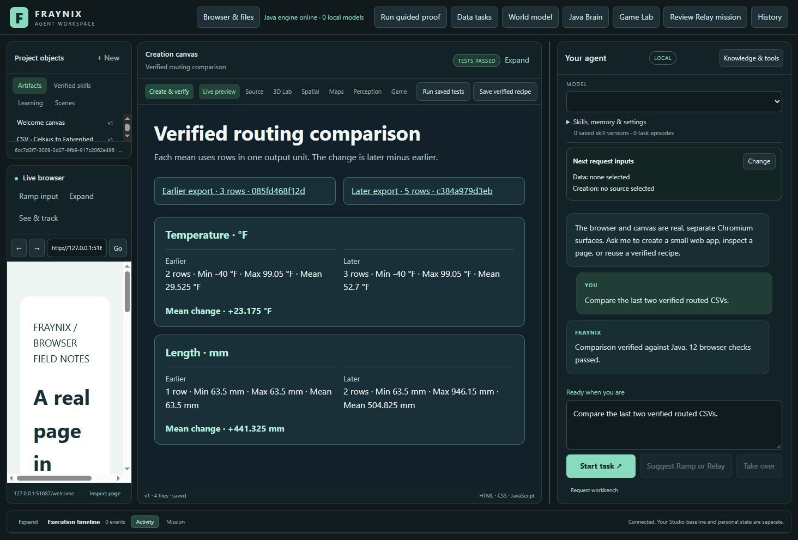
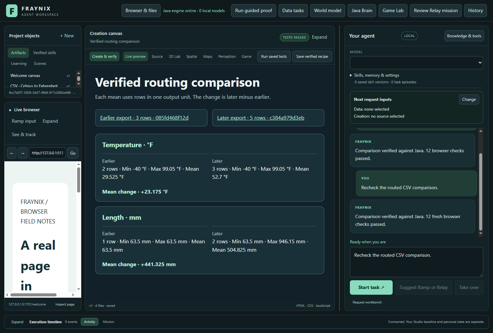

Compare verified routing exports by output unit
Compare the latest two verified routing exports in Chat, with separate °F and mm summaries. Recheck the same two exports against Java and the browser after restart.

The saved comparison shows changes separately for Fahrenheit and millimetres

Chat confirms fresh Java and browser verification for the original pair after restart
System files
Open source